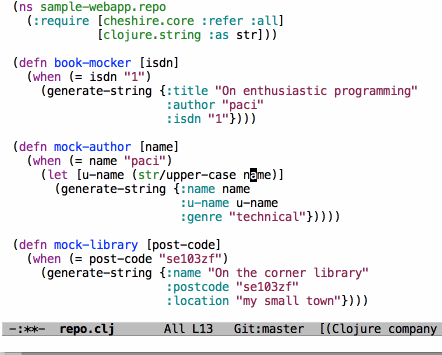
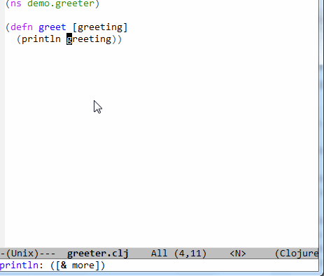
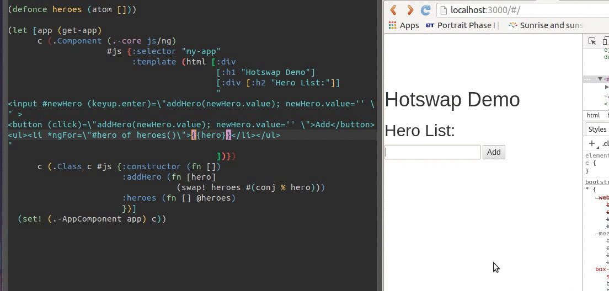

Welcome
A short overview of optimising your development feedback loop
 oliyh
oliyh
I've been a professional software developer for 15 years, and I don't know how to type the character é.
If I need it I copy it from Beyoncé's wikipedia page.
How do we improve things?
- Understand
- Observe
- Think
- Change
- GOTO 1
We may loop hundreds of times to fix a bug or implement a feature, so it's important to optimise it
Understand, observe, think
- Build a mental model
-
Take notes
- Mind maps
- Lists
- Kettelkasten method
- Challenge, update and reinforce your model
A honed mental model will help you to understand and think more efficiently about problems and solutions.
Organise!
Accept you will be initially deluged with information
Changing
Our IDEs are anvils
keyboards our hammers
IDE
Your IDE will contain many shortcuts for common tasks:
-
 Auto-formatting
Auto-formatting
-  Renaming something
-  Auto imports of dependencies
Typing
Typing speed ∝ Hacking ability
Keyboards
- Do you use all your fingers?
- Touch type without looking at the keyboard?
- Have frequently used keys in convenient places?
- Minimise finger travel to improve accuracy?
Looping
Getting your new code ready for observing
| Strategy | Cost | Latency |
|---|---|---|
| Ship it & see | Build, paperwork, deploy, users | 3 days |
| UAT | Build, deploy, users | 1 day |
| Local env | Build, start | 10 mins |
| Test | Build | 10s |
| Interactive | Compile | 1s |
Interactive
Interactive development separates state from code
Result
Fast feedback means we can have greater appetite for exploring edge cases
A QA engineer walks into a bar. Orders a beer. Orders 0 beers. Orders 999999999999 beers. Orders a lizard. Orders -1 beers. Orders 0.1 beers. Orders a uieibaclkjd.
Conclusion
We improve the product. We are happier because we feel more productive.
First real customer walks in and asks where the bathroom is. The bar bursts into flames, killing everyone.